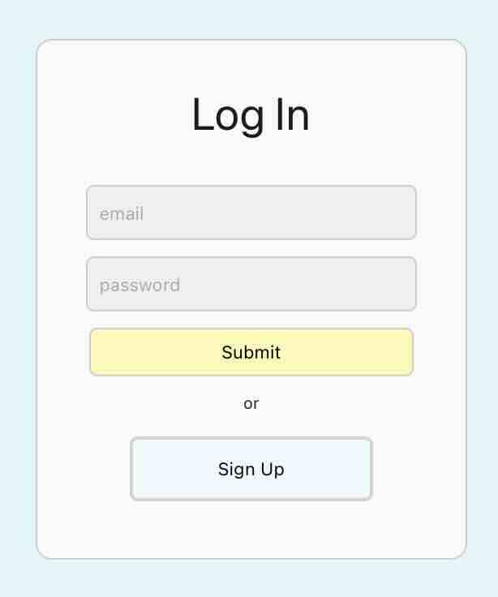
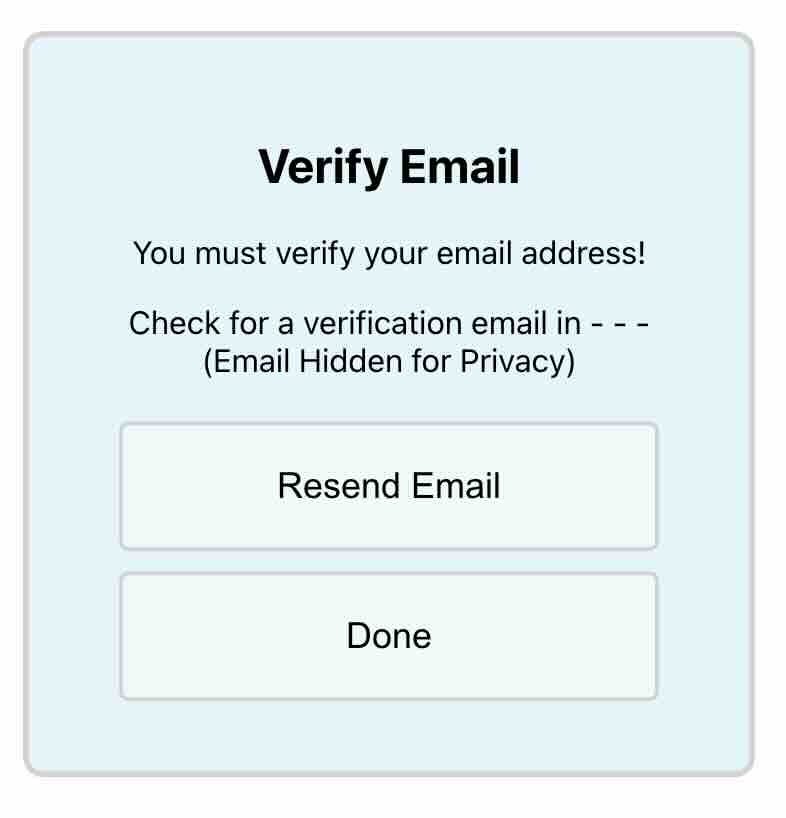
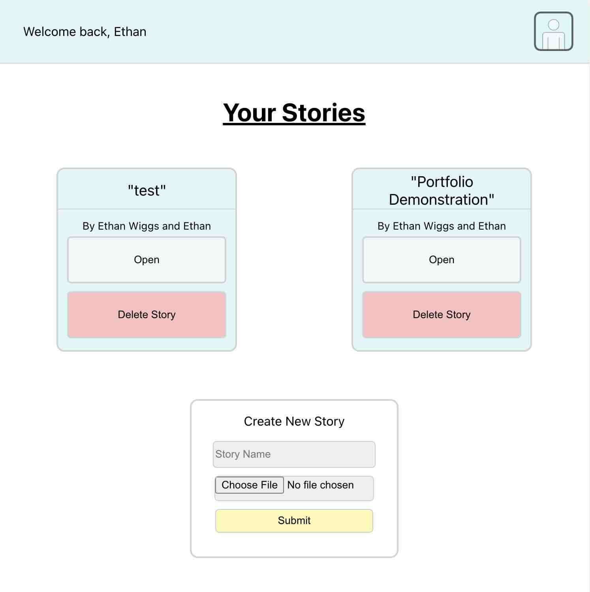
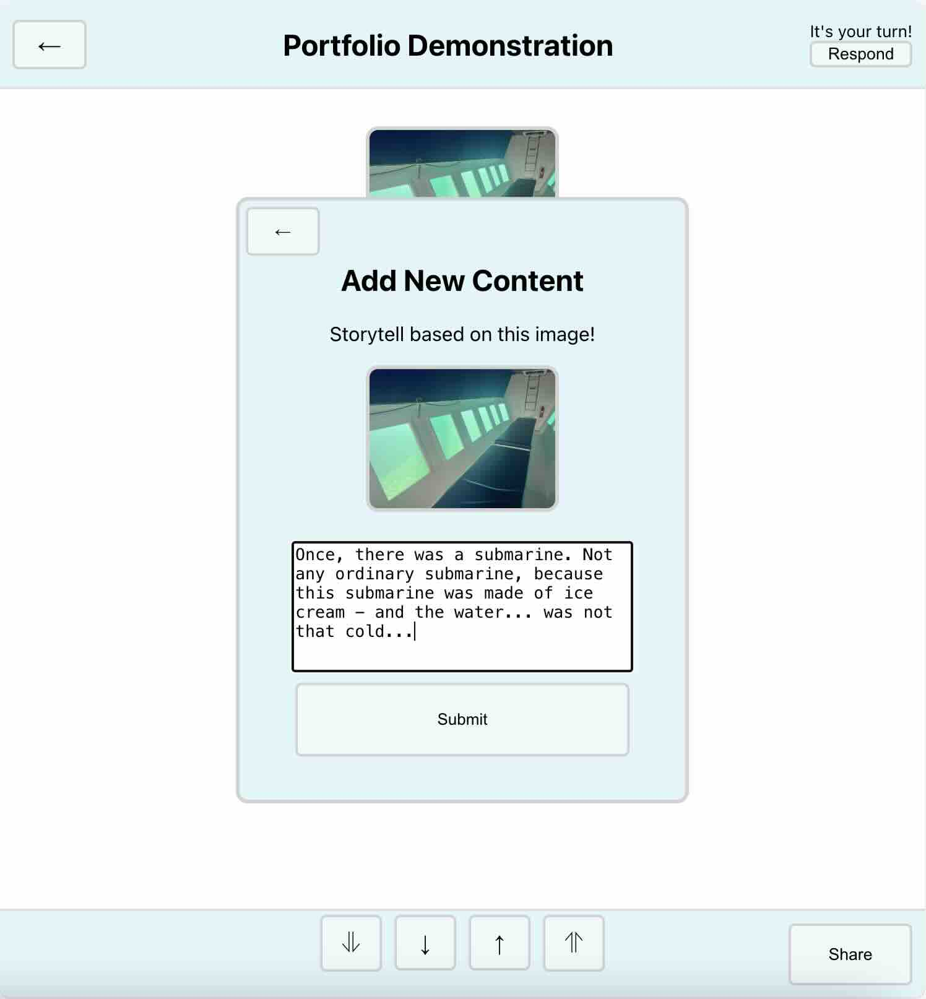
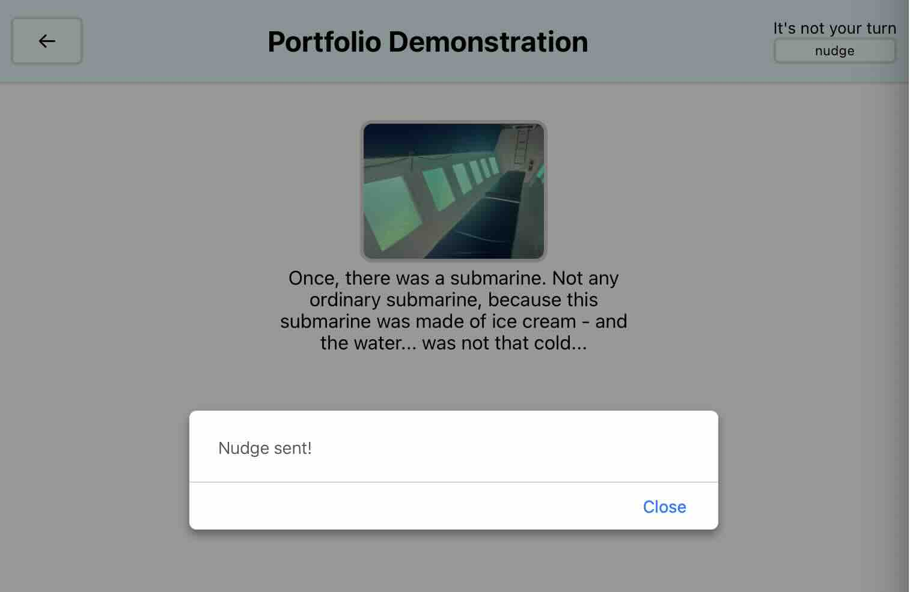

An web application (installable on the home screen) where users partner up to write stories. Stories are written in reverse - each paragraph is inspired by an image uploaded by the other user. By using Firebase authentication, users can create accounts and save their stories.
User accounts must be verified via email, before they can log in.
A story is created by one user, who invites a second user based on a web link. The option to create a story, and your existing stories, are available on the dashboard.
Inside each story, the user can see whose turn it is to write. They are prompted to upload an image, or write based on an image.
You can even nudge your partner to remind them to write their next paragraph.
This project remains one of my favourites — blending storytelling with interaction design and cloud-based features to create a playful, meaningful collaboration tool.